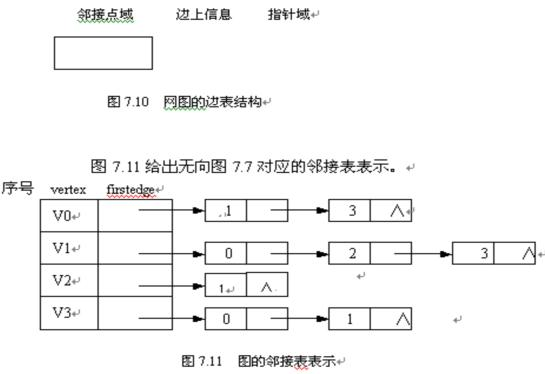

|
数 据 结 构 与 算 法 |
第七章 图§7.2 图的存储结构图是一种结构复杂的数据结构，表现在不仅各个顶点的度可以千差万别，而且顶点之间的逻辑关系也错综复杂。从图的定义可知，一个图的信息包括两部分，即图中顶点的信息以及描述顶点之间的关系——边或者弧的信息。因此无论采用什么方法建立图的存储结构，都要完整、准确地反映这两方面的信息。下面介绍几种常用的图的存储结构。 7.2.1 数组表示法一、表示法所谓数组表示法的存储结构，就是用一维数组存储图中顶点的信息，用矩阵表示图中各顶点之间的邻接关系。假设图G＝（V，E）有n个确定的顶点，即V＝{v0,v1,…,vn-1},则表示G中各顶点相邻关系为一个n×n的矩阵。其中，wij表示边(vi,vj)或<vi,vj>上的权值；∞表示一个计算机允许的、大于所有边上权值的数。 邻接矩阵存储方法容易看出这种表示具有以下特点： ① 无向图的邻接矩阵一定是一个对称矩阵。因此，在具体存放邻接矩阵时只需存放上（或下）三角矩阵的元素即可。 ② 对于无向图，邻接矩阵的第i行（或第i列）非零元素（或非∞元素）的个数正好是第i个顶点的度TD(vi)。 ③ 对于有向图，邻接矩阵的第i行（或第i列）非零元素（或非∞元素）的个数正好是第i个顶点的出度OD(vi)（或入度ID(vi)）。 ④ 用邻接矩阵方法存储图，很容易确定图中任意两个顶点之间是否有边相连；但是，要确定图中有多少条边，则必须按行、按列对每个元素进行检测，所花费的时间代价很大。这是用邻接矩阵存储图的局限性。 二、图的邻接矩阵存储表示在用邻接矩阵存储图时，除了用一个二维数组存储用于表示顶点间相邻关系的邻接矩阵外，还需用一个一维数组来存储顶点信息，另外还有图的顶点数和边数。故可将其形式描述如下：#define MaxVertexNum 100 /*最大顶点数设为100*/ typedef char VertexType; /*顶点类型设为字符型*/ typedef int EdgeType; /*边的权值设为整型*/ typedef struct { v VertexType vexs[MaxVertexNum]; /*顶点表*/ EdeType edges[MaxVertexNum][MaxVertexNum]; /*邻接矩阵，即边表*/ int n,e; /*顶点数和边数*/ }Mgragh; /*Maragh是以邻接矩阵存储的图类型*/ 建立一个图的邻接矩阵存储的算法如下： void CreateMGraph(MGraph *G) {/*建立有向图G的邻接矩阵存储*/ int i,j,k,w; v char ch; printf("请输入顶点数和边数(输入格式为:顶点数,边数):\n"); scanf("%d,%d",&(G->n),&(G->e));/*输入顶点数和边数*/ printf("请输入顶点信息(输入格式为:顶点号<CR>):\n"); for (i=0;i<G->n;i++) scanf("\n%c",&(G->vexs[i])); /*输入顶点信息，建立顶点表*/ for (i=0;i<G->n;i++) for (j=0;j<G->n;j++) G->edges[i][j]=0; /*初始化邻接矩阵*/ printf("请输入每条边对应的两个顶点的序号(输入格式为:i,j):\n"); for (k=0;k<G->e;k++) {scanf("\n%d,%d",&i,&j); /*输入e条边，建立邻接矩阵*/ G->edges[i][j]=1; /*若加入G->edges[j][i]=1;，*/ /*则为无向图的邻接矩阵存储建立*/ } }/*CreateMGraph*/ 7.2.2 邻接表一、表示法：邻接表(Adjacency List)是图的一种顺序存储与链式存储结合的存储方法。邻接表表示法类似于树的孩子链表表示法。就是对于图G中的每个顶点vi，将所有邻接于vi的顶点vj链成一个单链表，这个单链表就称为顶点vi的邻接表，再将所有点的邻接表表头放到数组中，就构成了图的邻接表。一种是顶点表的结点结构，它由顶点域（vertex）和指向第一条邻接边的指针域（firstedge）构成，另一种是边表（即邻接表）结点，它由邻接点域(adjvex)和指向下一条邻接边的指针域(next)构成。对于网图的边表需再增设一个存储边上信息（如权值等）的域（info）。 邻接表表示的形式描述如下： ＃define MaxVerNum 100 /*最大顶点数为100*/ typedef struct node{ /*边表结点*/ int adjvex; /*邻接点域*/ struct node * next; /*指向下一个邻接点的指针域*/ /*若要表示边上信息，则应增加一个数据域info*/ }EdgeNode; typedef struct vnode{ /*顶点表结点*/ VertexType vertex; /*顶点域*/ EdgeNode * firstedge; /*边表头指针*/ }VertexNode; typedef VertexNode AdjList[MaxVertexNum]; /*AdjList是邻接表类型*/ typedef struct{ v AdjList adjlist; /*邻接表*/ int n,e; /*顶点数和边数*/ }ALGraph; /*ALGraph是以邻接表方式存储的图类型*/ 建立一个有向图的邻接表存储的算法如下： void CreateALGraph(ALGraph *G) {/*建立有向图的邻接表存储*/ int i,j,k; EdgeNode * s; v printf("请输入顶点数和边数(输入格式为:顶点数,边数)：\n"); scanf("%d,%d",&(G->n),&(G->e)); /*读入顶点数和边数*/ printf("请输入顶点信息(输入格式为:顶点号<CR>)：\n"); for (i=0;i<G->n;i++) /*建立有n个顶点的顶点表*/ {scanf("\n%c",&(G->adjlist[i].vertex)); /*读入顶点信息*/ G->adjlist[i].firstedge=NULL; /*顶点的边表头指针设为空*/ } 若无向图中有n 个顶点、e条边，则它的邻接表需n个头结点和2e个表结点。显然，在边稀疏(e<<n(n-1)/2)的情况下，用邻接表表示图比邻接矩阵节省存储空间，当和边相关的信息较多时更是如此。 在无向图的邻接表中，顶点vi的度恰为第i个链表中的结点数；而在有向图中，第i个链表中的结点个数只是顶点vi的出度，为求入度，必须遍历整个邻接表。在所有链表中其邻接点域的值为i的结点的个数是顶点vi的入度。有时，为了便于确定顶点的入度或以顶点vi为头的弧，可以建立一个有向图的逆邻接表，即对每个顶点vi 建立一个链接以vi为头的弧的链表。例如图所示为有向图G2（图8.2）的邻接表和逆邻接表。  在建立邻接表或逆邻接表时，若输入的顶点信息即为顶点的编号，则建立邻接表的复杂度为O（n+e），否则，需要通过查找才能得到顶点在图中位置，则时间复杂度为O（n·e）。 在邻接表上容易找到任一顶点的第一个邻接点和下一个邻接点，但要判定任意两个顶点（vi 和vj）之间是否有边或弧相连，则需搜索第i个或第j个链表，因此，不及邻接矩阵方便。 7.2.3 十字链表十字链表（Orthogonal List）是有向图的一种存储方法，它实际上是邻接表与逆邻接表的结合，即把每一条边的边结点分别组织到以弧尾顶点为头结点的链表和以弧头顶点为头顶点的链表中。在十字链表表示中，顶点表和边表的结点结构分别如图7.13的(a)和(b)所示。在弧结点中有五个域：其中尾域(tailvex)和头(headvex)分别指示弧尾和弧头这两个顶点在图中的位置，链域hlink指向弧头相同的下一条弧，链域tlink指向弧尾相同的下一条弧，info域指向该弧的相关信息。弧头相同的弧在同一链表上，弧尾相同的弧也在同一链表上。它们的头结点即为顶点结点，它由三个域组成：其中vertex域存储和顶点相关的信息，如顶点的名称等；firstin和firstout为两个链域，分别指向以该顶点为弧头或弧尾的第一个弧结点。例如，图7.14(a)中所示图的十字链表如图7.14（b）所示。若将有向图的邻接矩阵看成是稀疏矩阵的话，则十字链表也可以看成是邻接矩阵的链表存储结构，在图的十字链表中，弧结点所在的链表非循环链表，结点之间相对位置自然形成，不一定按顶点序号有序，表头结点即顶点结点，它们之间而是顺序存储。 有向图的十字链表存储表示的形式描述如下： #define MAX_VERTEX_NUM 20 typedef struct ArcBox { int tailvex,headvex; /*该弧的尾和头顶点的位置*/ struct ArcBox * hlink, tlink; /分别为弧头相同和弧尾相财的弧的链域*/ InfoType info; /*该弧相关信息的指针*/ }ArcBox; v typedef struct VexNode { VertexType vertex: ArcBox fisrin, firstout; /*分别指向该顶点第一条入弧和出弧*/ }VexNode; typedef struct { VexNode xlist[MAX_VERTEX_NUM]; /*表头向量*/ int vexnum,arcnum; /*有向图的顶点数和弧数*/ }OLGraph; 图的邻接矩阵看成是稀疏矩阵的话，则十字链表也可以看成是邻接矩阵的链表存储结构，在图的十字链表中，弧结点所在的链表非循环链表，结点之间相对位置自然形成，不一定按顶点序号有序，表头结点即顶点结点，它们之间而是顺序存储。 二、有向图的十字链表存储表示：#define MAX_VERTEX_NUM 20 vtypedef struct ArcBox{int tailvex,headvex; struct ArcBox *hlink, *tlink; InfoType *info; }ArcBox; typedef struct VexNode{ VertexType data; ArcBox *firstin, *firstout; }VexNode vtypedef struct{ VexNode xlist[MAX_VERTEX_NUM]; Int vexnum, arcnum; }OLGraph; 下面给出建立一个有向图的十字链表存储的算法。只要输入n个顶点的信息和e条弧的信息，便可建立该有向图的十字链表。 void CreateDG(LOGraph **G) /*采用十字链表表示，构造有向图G(G.kind=DG)*/ { scanf (&(*G->brcnum),&(*G->arcnum),&IncInfo); /*IncInfo为0则各弧不含其实信息*/ for (i=0;i<*G->vexnum;++i) /*构造表头向量*/ { scanf(&(G->xlist[i].vertex)); /*输入顶点值*/ *G->xlist[i].firstin=NulL;*G->xlist[i].firstout =NULL; /*初始化指针*/ } v for(k=0;k<G.arcnum;++k) /*输入各弧并构造十字链表*/ { scanf(&v1,&v2); /*输入一条弧的始点和终点*/ i=LocateVex(*G,v1); j=LocateVex(*G,v2); /*确定v1和v2在G中位置*/ p=(ArcBox*) malloc (sizeof(ArcBox)); /*假定有足够空间*/ *p={ i,j,*G->xlist[j].fistin,*G->xlist[i].firstout,NULL} /*对弧结点赋值*/ /*{tailvex,headvex,hlink,tlink,info}*/ *G->xlist[j].fisrtin=*G->xlist[i].firstout=p; /*完成在入弧和出弧链头的插入*/ if (IncInfo) Input( p->info); /*若弧含有相关信息，则输入*/ } }/*CreateDG*/ 7.2.4 邻接多重表一、问题的提出与解决邻接多重表是无向图的另一种链式存储结构，虽然邻接表是无向图的一种有效的存储结构，但在某些对边进行操作的问题中，因为，如果用邻接表存储无向图，每条边的两个边点分别在以该边所依附的两个顶点为头结点的链表中，这给图的某些操作带来不便。例如，对已访问过的边做标记，或者要删除图中某一条边等，都需要找到表示同一条边的两个结点。结点结构如下： 在边结点中，mark为标志域，用于标志该条边是否被搜索过，ivex和jvex为该边依附的两个顶点在图中的位置，ilink指向下一条依附于顶点ivex的边，jlink指向下一条依附于顶点jvex的边，info指向和边相关的各种信息的指针域；在顶点结点中，data存储和该顶点相关的信息，firstedge指示第一条依附于该顶点的边。 对于无向图而言，其邻接多重表和邻接表的差别，仅仅在于同一条边在邻接表中用两个顶点表示，而在邻接多重表中只有一个接点。因此，除了在边结点中增加一个标志域外，两者所需存储量相同。 二、邻接多重表存储表示#define MAX_VERTEX_NUM 20typedef emun {unvisited, visited} visitif; typedef struct Ebox{ Visitif mark; Int ivex, jvex; Struct Ebox *ilink, *jlink; InfoType *info; }Ebox; typedef struct Vexbox{ VertexTYpe data; Ebox *firstedge; }VexBox; typedef struct{ VexBox adjmulist[MAX_VERTEX_NUM]; Int vexnum,edgenum; }AMLGraph; |